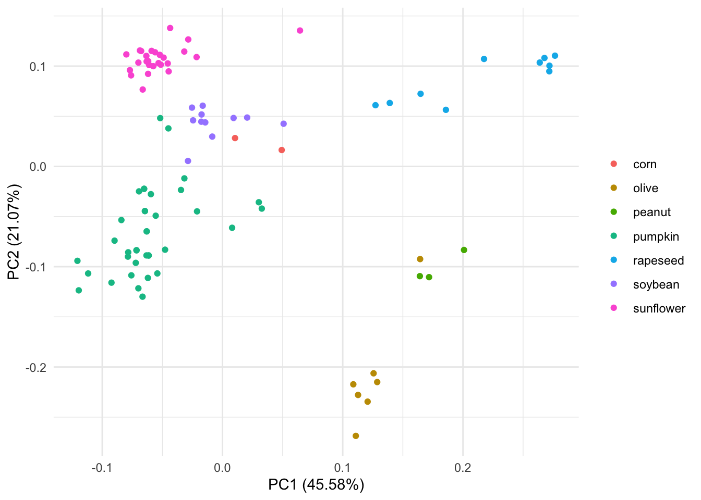
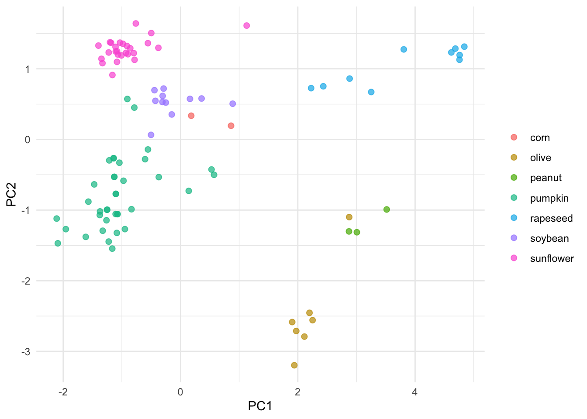

Clasificación PCA y UMAP de aceites vegetales con tidymodels & base R
Comparando los pasos seguidos en Tidymodels y base R para hacer la reducción de dimensionalidad.
library(tidymodels)
library(modeldata)
library(ggfortify)
library(tidyverse)
library(embed)Motivación y datos
Mientras exploraba el 📦
modeldata encontré el conjunto de datos aceites (oils), que tiene información de cromatografía de gases utilizada para determinar la composición de ácidos grasos de 96 muestras correspondientes a 7 aceites vegetales diferentes del mercado. Estos datos fueron publicados por un laboratorio de química. Estos datos son muy parecidos a lo que obtenemos en un laboratorio de proteómica, y lo primero que tendemos a hacer para explorar estos datos complejos es hacer un PCA para tener una idea simplificada de su distribución en el espacio.
Exploracion de datos
data(oils)str(oils)## tibble [96 × 8] (S3: tbl_df/tbl/data.frame)
## $ palmitic : num [1:96] 9.7 11.1 11.5 10 12.2 9.8 10.5 10.5 11.5 10 ...
## $ stearic : num [1:96] 5.2 5 5.2 4.8 5 4.2 5 5 5.2 4.8 ...
## $ oleic : num [1:96] 31 32.9 35 30.4 31.1 43 31.8 31.8 35 30.4 ...
## $ linoleic : num [1:96] 52.7 49.8 47.2 53.5 50.5 39.2 51.3 51.3 47.2 53.5 ...
## $ linolenic : num [1:96] 0.4 0.3 0.2 0.3 0.3 2.4 0.4 0.4 0.2 0.3 ...
## $ eicosanoic: num [1:96] 0.4 0.4 0.4 0.4 0.4 0.4 0.4 0.4 0.4 0.4 ...
## $ eicosenoic: num [1:96] 0.1 0.1 0.1 0.1 0.1 0.5 0.1 0.1 0.1 0.1 ...
## $ class : Factor w/ 7 levels "corn","olive",..: 4 4 4 4 4 4 4 4 4 4 ...oils %>%
count(class)## # A tibble: 7 x 2
## class n
## * <fct> <int>
## 1 corn 2
## 2 olive 7
## 3 peanut 3
## 4 pumpkin 37
## 5 rapeseed 10
## 6 soybean 11
## 7 sunflower 26¡Esto parece un conjunto de datos divertido para proyectar en un espacio de dimensión reducida como PCA o UMAP!
PCA in base R
Los pasos para generar los componentes para PCA en base R serían:
pca_res <- oils %>%
dplyr::select(where(is.numeric)) %>% # select only the numeric variables
tidyr::drop_na() %>% # to drop any NA
scale() %>% # to initially normalise the variances
prcomp() # to convert numeric data to principal componentspca_res## Standard deviations (1, .., p=7):
## [1] 1.78631393 1.21432295 1.11849881 0.80775705 0.49010697 0.43543634 0.03437479
##
## Rotation (n x k) = (7 x 7):
## PC1 PC2 PC3 PC4 PC5
## palmitic -0.1724393 -0.69299469 -0.04593832 0.46972220 -0.19508286
## stearic -0.4589668 -0.25101419 -0.24289349 0.18544207 0.61204669
## oleic 0.4578722 -0.39918199 0.14986398 -0.28962122 0.08386290
## linoleic -0.4590266 0.44858975 -0.11564307 0.05114339 -0.07111895
## linolenic 0.3446082 0.27607934 0.23426894 0.80580939 -0.02884460
## eicosanoic 0.1682596 -0.01595516 -0.81991595 0.04591653 -0.46100031
## eicosenoic 0.4384013 0.14034544 -0.41942317 0.08389933 0.60157904
## PC6 PC7
## palmitic -0.4661816 0.10904667
## stearic 0.5067647 0.03928963
## oleic 0.2409267 0.67792957
## linoleic -0.2371904 0.71467174
## linolenic 0.2916300 0.12220735
## eicosanoic 0.2889776 0.03216008
## eicosenoic -0.4929535 0.01587562Podemos ver que los componentes principales (PC de principal components) para cada clase de aceite se agregaron en un objeto prcomp.
Y podríamos trazar esos componentes con “autoplot”
autoplot(pca_res, data = oils, colour = "class") +
labs(color = NULL) + theme_minimal() Podemos ver que este PCA separa mucho el aceite de oliva de los otros 7 tipos de aceites. También parece que uno de los aceites de oliva está más cerca del tipo de aceite de maní en el espacio PCA.
PCA con Tidymodels
Modelar es muy parecido a cocinar, y en el universo de Tidymodels el lenguaje refleja muy bien esto 👩🍳. Hay tres cosas que tendremos que hacer:
- Escribir una receta 👩🍳
- Preparar esa receta 🍝
- Sacarle jugo a la receta 🥛
Escribir una receta
Escribimos la receta agregando una serie de pasos.
pca_rec <- recipe(~., data = oils) %>% # empieza a escribir la receta con todos los datos
update_role(class, new_role = "id") %>% # to keep this column around but not include it in the model
step_normalize(all_predictors()) %>% # para mantener esta columna pero no incluirla en el modelo
step_pca(all_predictors()) # para convertir datos numéricos en componentes principalesComo vemos los pasos que debemos seguir para escribir la receta son muy similares a los pasos seguidos en base R.
Sin embargo, esto no es todo. De hecho, si exploramos cómo se ve la receta:
pca_rec## Data Recipe
##
## Inputs:
##
## role #variables
## id 1
## predictor 7
##
## Operations:
##
## Centering and scaling for all_predictors()
## No PCA components were extracted.Podemos ver que se creó la matriz de diseño con id y variables predictoras. La receta nos dice que los No se extrajeron componentes de PCA. Esto se debe a que una receta especifica lo que queremos hacer, pero todavía no afecta a los datos. Necesitamos extraer esos componentes preparando la receta
Preparar esa receta
Podemos usar la función prep para prepararnos para entrenar esta receta de datos. Prep devuelve una receta actualizada con las estimaciones.
pca_prep <- prep(pca_rec)
pca_prep## Data Recipe
##
## Inputs:
##
## role #variables
## id 1
## predictor 7
##
## Training data contained 96 data points and no missing data.
##
## Operations:
##
## Centering and scaling for palmitic, stearic, oleic, linoleic, ... [trained]
## PCA extraction with palmitic, stearic, oleic, linoleic, ... [trained]En las operaciones vemos que los datos han sido [entrenados].
¡Excelente! Pero estos todavía no son los componentes 🤔. ¡Necesitamos finalizar esa receta preparada haciéndola jugo!
Sacarle jugo a la receta
Necesitamos aplicar esta operación a los datos; juice devuelve un tibble en el que se han aplicado todos los pasos a los datos.
pca_juiced <- juice(pca_prep)
pca_juiced## # A tibble: 96 x 6
## class PC1 PC2 PC3 PC4 PC5
## <fct> <dbl> <dbl> <dbl> <dbl> <dbl>
## 1 pumpkin -1.22 -0.296 -0.245 -0.158 0.0882
## 2 pumpkin -1.10 -0.771 -0.198 -0.00964 -0.0901
## 3 pumpkin -1.08 -1.06 -0.212 0.0154 0.00279
## 4 pumpkin -1.14 -0.266 -0.192 -0.177 -0.137
## 5 pumpkin -1.25 -0.995 -0.241 0.226 -0.186
## 6 pumpkin 0.572 -0.500 -0.0821 0.0652 0.286
## 7 pumpkin -1.13 -0.530 -0.202 -0.0640 -0.0592
## 8 pumpkin -1.13 -0.530 -0.202 -0.0640 -0.0592
## 9 pumpkin -1.08 -1.06 -0.212 0.0154 0.00279
## 10 pumpkin -1.14 -0.266 -0.192 -0.177 -0.137
## # … with 86 more rows¡Excelente! ¡Los datos procesados están listos para ser “consumidos” por un gráfico!
pca_juiced %>%
ggplot(aes(PC1, PC2, label = class)) +
geom_point(aes(color = class), alpha = 0.7, size = 2) +
labs(color = NULL) +theme_minimal()
El PCA inicial y este generado con Tidymodels se ven muy similares. Ten en cuenta que la gráfica automática agrega información a la gráfica, como proporcionar el porcentaje de PC. Entonces, ¿cuál es el punto de usar Tidymodels si es una serie de pasos tan larga en comparación con la base R? Tidymodels integra muchos paquetes modulares que facilitan la creación y evaluación de diferentes modelos.
UMAP con Tidymodels
Además de PCA, podríamos trazar una representación UMAP. Para hacer eso, necesitaríamos una nueva receta, una que incluya un paso para especificar la técnica de reducción de dimensión UMAP; este paso se llama naturalmente step_umap. Una vez que tenemos esta receta, el proceso es el mismo. Receta, preparación, jugo.
umap_rec <- recipe(~., data = oils) %>%
update_role(class, new_role = "id") %>%
step_normalize(all_predictors()) %>%
step_umap(all_predictors()) # este paso hace que la receta sea diferenteumap_prep <- prep(umap_rec)umap_juiced <- juice(umap_prep)umap_juiced %>%
ggplot(aes(umap_1, umap_2, label = class)) +
geom_point(aes(color = class), alpha = 0.7, size = 2) +
labs(color = NULL)
Este modelo separa los datos en el espacio de forma algo diferente a la PCA. PCA y UMAP son fundamentalmente diferentes en que PCA es un algoritmo de reducción de dimensionalidad lineal, mientras que UMAP no es lineal. Además, hay algunos parámetros importantes que pueden afectar el aspecto de la representación UMAP. Esto se explica muy bien en el archivo README del paquete umapr de ropenscilabs. Puedes ver argumentos adicionales ofrecidos por step_umap con ?step_umap. También hay que tener en cuenta que hemos entrenado nuestros modelos con un pequeño conjunto de datos (no hemos realizado un remuestreo) y no hemos evaluado su rendimiento.
Conclusiones
El procesamiento de datos para realizar aprendizaje automático sin supervisión con Tidymodels es muy similar al de base R. Los algoritmos de reducción de dimensionalidad lineal y no lineal separan los datos en el espacio reducido de manera diferente.
Maria Dermit
Investigadora postdoctoral
Postdoctoral researcher interested in translation control and data science for biomedical research.